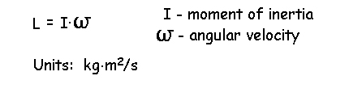
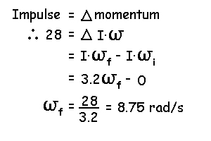
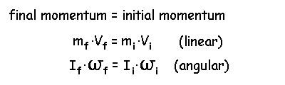

Impulse-Momentum (Continued)
Angular momentum:
On the previous page, we defined linear momentum as the product of mass and velocity. An object can also have angular or rotational momentum if it has an angular velocity. In this case the angular momentum is calculated as the product of the moment of inertia about the center of gravity and the angular velocity. The symbol used is (L) and the units are kilogram meters squared per second.

The change in angular momentum is the same as angular impulse and can also be defined as the product of torque and time or the area under a torque-time curve. The units for angular momentum is different than linear momentum so the two cannot be added together for total momentum - they must be treated separately.
Example: What is the angular velocity of a figure skater who generates an angular impulse of 28 N.m.s prior to starting a spin if her moment of inertia is 3.2 kg.m2

Conservation of momentum:
When the sum of the external forces acting on an object or system of objects is zero, the momentum of the object or system of objects remains constant. On the previous page, we saw that impulse was a change in momentum. If force is zero, then impulse is also zero and momentum is unchanged.

Even though momentum is conserved, it is possible for velocity to change if mass changes. If a long jumper were to carry weights in his hands, he could increase his velocity in the air by releasing the weights in the air. This example of manipulating velocity by altering mass may seem a bit ridiculus but it is done quite frequently in rotational movements. When a figure skater spins on the ice, friction force is almost zero and the angular momentum is conserved. If the skater pulls her arms into her body, she reduces the moment of inertia about the long axis of her body and her rotational velocity increases.
